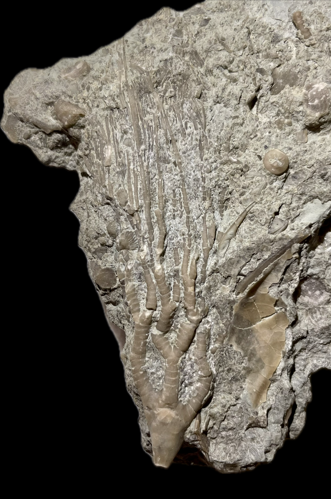
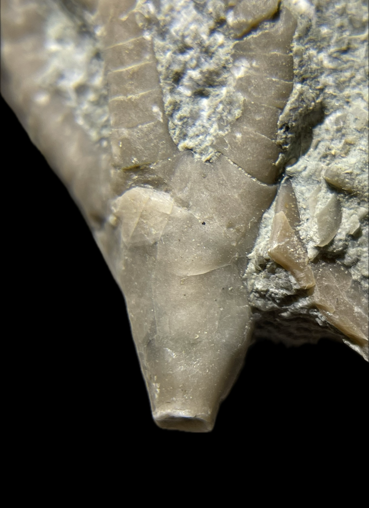
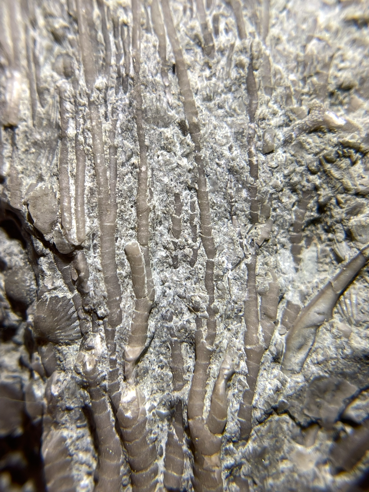
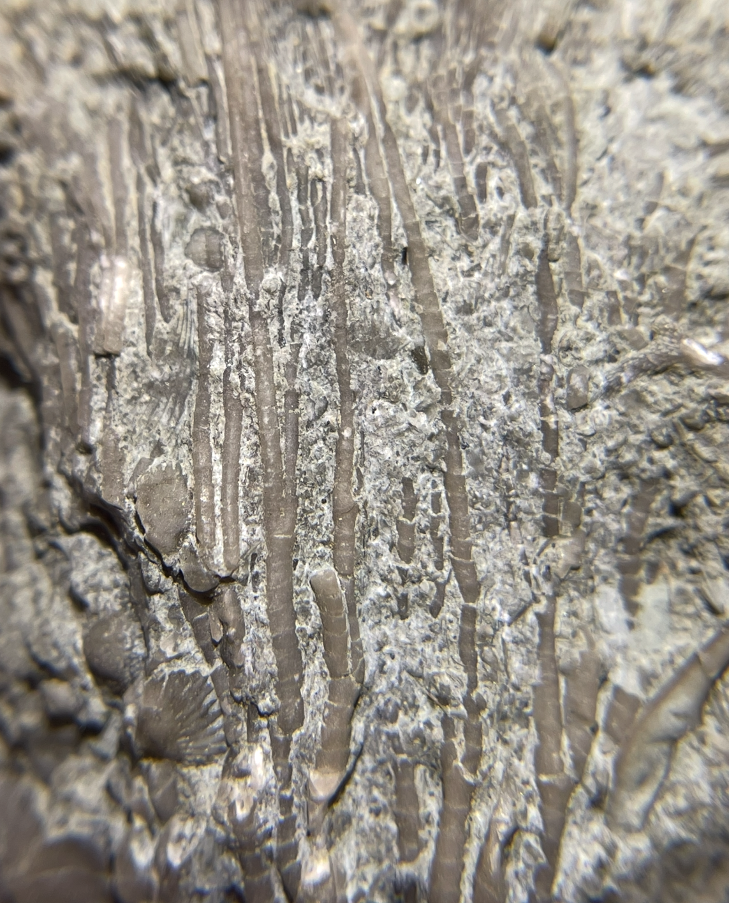

Crinoid
Size: 7 cm crown
A spectacular crown of a rare dendrocrinid crinoid endemic to the Ordovician of Ohio and Indiana. Dendrocrinus caduceus is a rather unusual member of its genus that possesses relatively thick, robust proximal arms which taper rapidly and exhibit dense heterotomous (i.e. asymmetrical) branching (Meek 1873). |
 |
|---|
Copyright © 2024 by Samuel Kim, all rights reserved